CODING AGENTS AS PIXEL WORLD MODELS
traex/GPT-6.1-Sol · 0176
点击播放 · 原生 RGB 像素
逐轮保存的候选
回放视频、检查图与代码变化。
每份候选均可单独播放。实际图片检查记录在下方工具轨迹中。
候选 01播放与检查图
点击播放 · 原生 RGB 像素
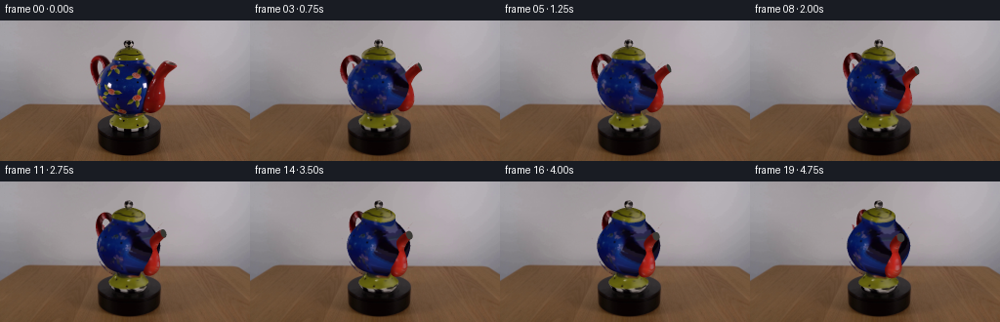
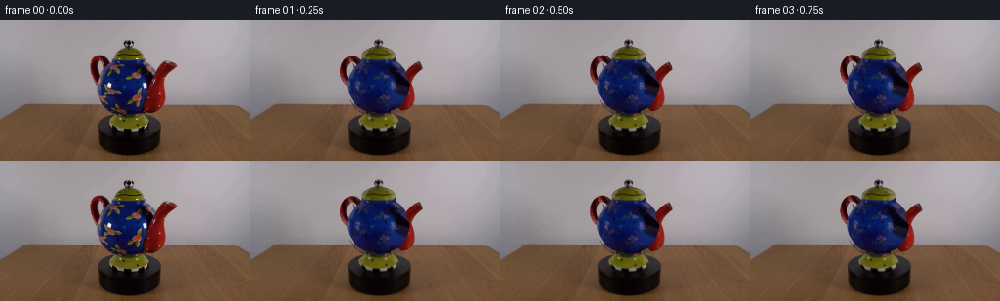
展开代码变化
--- 上一保存版本
+++ 本次保存版本
@@ -0,0 +1,178 @@
+import numpy as np
+from PIL import Image, ImageDraw
+from scipy.ndimage import map_coordinates, distance_transform_edt, gaussian_filter
+from scipy.interpolate import PchipInterpolator
+import cv2
+from pathlib import Path
+import artifact_io
+
+ROOT=Path(__file__).resolve().parent
+SRC=np.asarray(Image.open(ROOT/'first_frame.png').convert('RGB'))
+H,W=144,256
+S=3
+CX,CY=131.7,109.0
+EL=np.deg2rad(20)
+CE,SE=np.cos(EL),np.sin(EL)
+
+polys={
+ 'body':[(116,41),(129,40),(145,41),(151,47),(157,54),(161,64),(161,73),(157,84),(150,92),(142,96),(123,96),(112,91),(105,83),(101,77),(99,69),(100,61),(104,54),(111,47)],
+ 'lid':[(114,41),(115,35),(119,31),(125,28),(131,27),(138,29),(144,32),(147,37),(149,42)],
+ 'knob':[(127,27),(126,23),(128,20),(132,19),(135,21),(137,24),(134,28)],
+ 'spout':[(145,86),(149,74),(156,60),(161,51),(166,45),(170,41),(175,41),(179,42),(181,45),(178,49),(173,53),(169,60),(167,65),(169,72),(170,78),(167,85),(163,90),(157,94),(151,93)],
+ 'handle':[(103,35),(108,36),(112,40),(115,46),(113,53),(109,47),(107,42),(103,42),(101,45),(101,51),(103,58),(106,63),(104,69),(100,66),(97,61),(94,53),(92,46),(93,40),(96,36)],
+ 'foot':[(121,93),(144,93),(148,99),(152,104),(151,109),(148,113),(138,115),(122,115),(115,112),(112,108),(113,103),(117,98)],
+}
+masks={}
+for name,p in polys.items():
+ im=Image.new('L',(W,H));ImageDraw.Draw(im).polygon(p,fill=255);masks[name]=np.array(im)>0
+# Clamp projected photograph to the appropriate ceramic component, rather than picking up the wall.
+textures={}
+for name,m in masks.items():
+ # Exclude other parts in front of the body.
+ if name=='body': m=m & ~masks['spout'] & ~masks['handle'] & ~masks['lid']
+ if name=='handle':m=m & ~masks['body']
+ if name=='foot':m=m & ~masks['body']
+ # trim neutral wall from perimeter manually via saturation
+ hsv=cv2.cvtColor(SRC,cv2.COLOR_RGB2HSV)
+ if name not in ('knob',):
+ m=m & (hsv[:,:,1]>70)
+ if name=='foot':
+ m=masks[name]
+ if name=='body':m=m & (SRC[:,:,2]>SRC[:,:,0]*1.15)
+ if name in ('spout','handle'):m=m & (SRC[:,:,0]>SRC[:,:,1]*1.4)
+ _,inds=distance_transform_edt(~m,return_indices=True)
+ tex=SRC[inds[0],inds[1]].astype(float)
+ textures[name]=tex
+
+# Remove the old teapot, maintaining the fixed platform and table.
+union=np.logical_or.reduce(list(masks.values()))
+union=cv2.dilate(union.astype('uint8'),np.ones((3,3),np.uint8))
+bg=cv2.inpaint(SRC,union*255,9,cv2.INPAINT_TELEA)
+# A smooth wall reconstructed from nearby unobstructed wall samples avoids inpainting streaks.
+for yy in range(18,89):
+ for xx in range(90,183):
+ if union[yy,xx]:
+ t=(xx-86)/(186-86)
+ left=SRC[yy,84:89].mean(0);right=SRC[yy,183:188].mean(0)
+ bg[yy,xx]=left*(1-t)+right*t
+
+# Meshes are mathematical surfaces; all photographic appearance comes from the supplied frame.
+meshes=[]
+def add_grid(name,pts,closed=True):
+ pts=np.array(pts,float); nr,nc,_=pts.shape
+ # orientation normal computed analytically from local surface derivatives, fixed outward below
+ verts=pts.reshape(-1,3)
+ faces=[]
+ for i in range(nr-1):
+ for j in range(nc if closed else nc-1):
+ k=(j+1)%nc
+ a=i*nc+j;b=i*nc+k;c=(i+1)*nc+j;d=(i+1)*nc+k
+ faces.extend([[a,c,b],[b,c,d]])
+ faces=np.array(faces,np.int32)
+ normals=np.zeros_like(verts)
+ fn=np.cross(verts[faces[:,1]]-verts[faces[:,0]],verts[faces[:,2]]-verts[faces[:,0]])
+ for j in range(3):np.add.at(normals,faces[:,j],fn)
+ normals/=np.maximum(np.linalg.norm(normals,axis=1)[:,None],1e-9)
+ # outward consistent for lathe and toroidal tubes
+ meshes.append((name,verts,faces,normals))
+
+def lathe(name,profile,nr=60,nc=100):
+ profile=np.array(profile,float)
+ yy=np.linspace(profile[0,0],profile[-1,0],nr)
+ rr=PchipInterpolator(profile[:,0],profile[:,1])(yy)
+ phi=np.linspace(0,2*np.pi,nc,endpoint=False)
+ pts=np.stack(np.broadcast_arrays(rr[:,None]*np.sin(phi),yy[:,None],rr[:,None]*np.cos(phi)),axis=-1)
+ add_grid(name,pts)
+lathe('body',[(20,13),(21.5,17),(25,23),(31,27.5),(38,31),(46,32.5),(52,31.6),(59,28),(65,23.6),(70,19),(73,17.3),(77,17.1)],72,100)
+lathe('lid',[(77,17.4),(78.1,17.4),(80,16.3),(82.5,12.8),(84.5,8.8),(86,4),(86.7,.1)],30,100)
+lathe('foot',[(0,17.4),(2.3,18.5),(4,18.8),(5,20),(6.4,20.4),(8,18.8),(12,15.4),(16,12.2),(19.7,12.5),(20.4,14)],45,100)
+lathe('knob',[(86.4,.2),(87,2.4),(89,4.1),(91,4.6),(93,4.0),(94.5,2.5),(95,.1)],25,64)
+# Handle lies in the teapot's vertical symmetry plane.
+ph=np.linspace(0,2*np.pi,110,endpoint=True)
+ps=np.linspace(0,2*np.pi,36,endpoint=False)
+handle=[]
+for p in ph:
+ x=-26.7+9.8*np.cos(p);y=59.6+13.9*np.sin(p)
+ tx=-9.8*np.sin(p);ty=13.9*np.cos(p);norm=np.hypot(tx,ty)
+ nx=ty/norm;ny=-tx/norm
+ rad=3.25
+ handle.append(np.stack([x+rad*nx*np.cos(ps),y+rad*ny*np.cos(ps),rad*np.sin(ps)],-1))
+add_grid('handle',handle)
+# Curving red spout, widened near its attachment and tapering to an open lip.
+control=np.array([[0,18.5,25.5,3],[.12,23.5,25.5,7],[.28,28,31,9],[.44,28.5,39.5,7.8],[.59,28,48,5.8],[.73,32,57.2,5.1],[.86,37.7,64.0,4.7],[1,43,68.0,4.5]])
+t=np.linspace(0,1,83)
+x=PchipInterpolator(control[:,0],control[:,1])(t);y=PchipInterpolator(control[:,0],control[:,2])(t);r=PchipInterpolator(control[:,0],control[:,3])(t)
+dx=np.gradient(x);dy=np.gradient(y);norm=np.hypot(dx,dy)
+sp=[]
+for i in range(len(t)):
+ nx=dy[i]/norm[i];ny=-dx[i]/norm[i]
+ sp.append(np.stack([x[i]+r[i]*nx*np.cos(ps),y[i]+r[i]*ny*np.cos(ps),r[i]*np.sin(ps)],-1))
+add_grid('spout',sp)
+# A dark recessed opening closes only the hollow interior; not the red exterior.
+end=np.array([x[-1],y[-1],0]);nx=dy[-1]/norm[-1];ny=-dx[-1]/norm[-1]
+ring=[]
+for rr in np.linspace(0,4.48,8):
+ ring.append(np.stack([end[0]+rr*nx*np.cos(ps),end[1]+rr*ny*np.cos(ps),rr*np.sin(ps)],-1))
+add_grid('mouth',ring)
+
+# Bilinear sampling of the photographed glaze.
+def sample(name,u,v):
+ tx=textures[name]
+ u=np.clip(u,0,W-1.001);v=np.clip(v,0,H-1.001)
+ xi=u.astype(int);yi=v.astype(int);fu=u-xi;fv=v-yi
+ return (tx[yi,xi]*(1-fu)[:,None]*(1-fv)[:,None]+tx[yi,xi+1]*fu[:,None]*(1-fv)[:,None]+tx[yi+1,xi]*(1-fu)[:,None]*fv[:,None]+tx[yi+1,xi+1]*fu[:,None]*fv[:,None])
+
+LIGHT=np.array([-.55,.65,.8]);LIGHT/=np.linalg.norm(LIGHT)
+# Orthographic camera; rotating clockwise as viewed from above.
+def render(angle):
+ ca,sa=np.cos(angle),np.sin(angle)
+ rot=np.array([[ca,0,-sa],[0,1,0],[sa,0,ca]])
+ out=cv2.resize(bg,(W*S,H*S),interpolation=cv2.INTER_CUBIC).astype(float)
+ zbuf=np.full((H*S,W*S),-1e6)
+ for name,verts,faces,normals in meshes:
+ vr=verts@rot.T; nr=normals@rot.T
+ xp=(CX+vr[:,0])*S;yp=(CY-CE*vr[:,1]+SE*vr[:,2])*S
+ dep=SE*vr[:,1]+CE*vr[:,2]
+ for f in faces:
+ xx=xp[f]; yy=yp[f]
+ minx=max(0,int(np.floor(xx.min())));maxx=min(W*S-1,int(np.ceil(xx.max())))
+ miny=max(0,int(np.floor(yy.min())));maxy=min(H*S-1,int(np.ceil(yy.max())))
+ if minx>maxx or miny>maxy:continue
+ den=(yy[1]-yy[2])*(xx[0]-xx[2])+(xx[2]-xx[1])*(yy[0]-yy[2])
+ if abs(den)<1e-7:continue
+ Y,X=np.mgrid[miny:maxy+1,minx:maxx+1];X=X+.5;Y=Y+.5
+ a=((yy[1]-yy[2])*(X-xx[2])+(xx[2]-xx[1])*(Y-yy[2]))/den
+ b=((yy[2]-yy[0])*(X-xx[2])+(xx[0]-xx[2])*(Y-yy[2]))/den
+ c=1-a-b
+ D=a*dep[f[0]]+b*dep[f[1]]+c*dep[f[2]]
+ keep=(a>=-1e-6)&(b>=-1e-6)&(c>=-1e-6)&(D>zbuf[miny:maxy+1,minx:maxx+1])
+ if not np.any(keep):continue
+ ij=np.nonzero(keep); weights=np.stack([a[keep],b[keep],c[keep]],1)
+ orig=weights@verts[f]
+ N=weights@nr[f];N/=np.maximum(np.linalg.norm(N,axis=1)[:,None],1e-9)
+ N0=weights@normals[f];N0/=np.maximum(np.linalg.norm(N0,axis=1)[:,None],1e-9)
+ if name=='mouth':
+ color=np.tile(np.array([75.,76.,69.]),(len(orig),1))
+ color*= (.65+.35*np.abs(N@LIGHT))[:,None]
+ else:
+ u=CX+orig[:,0];v=CY-CE*orig[:,1]+SE*np.abs(orig[:,2])
+ color=sample(name,u,v)
+ # Light stays fixed in the room rather than rotating with the object.
+ l0=np.maximum(0,N0@LIGHT);l1=np.maximum(0,N@LIGHT)
+ factor=np.clip((.70+.30*l1)/(.70+.30*l0),.70,1.3)
+ color*=factor[:,None]
+ out[miny+ij[0],minx+ij[1]]=np.clip(color,0,255)
+ zbuf[miny+ij[0],minx+ij[1]]=D[keep]
+ return cv2.resize(out.astype(np.uint8),(W,H),interpolation=cv2.INTER_AREA)
+
+def main():
+ frames=[SRC.copy()]
+ for i in range(1,20):
+ angle=np.deg2rad(58*i/19)
+ print('frame',i,flush=True)
+ frames.append(render(angle))
+ frames=np.array(frames,dtype=np.uint8)
+ artifact_io.save(frames,ROOT)
+ # Initial reconstructed pose is useful for checking the silhouette.
+ Image.fromarray(render(0)).save(ROOT/'.tmp/reconstructed.png')
+if __name__=='__main__':main()
候选 02播放与检查图
点击播放 · 原生 RGB 像素

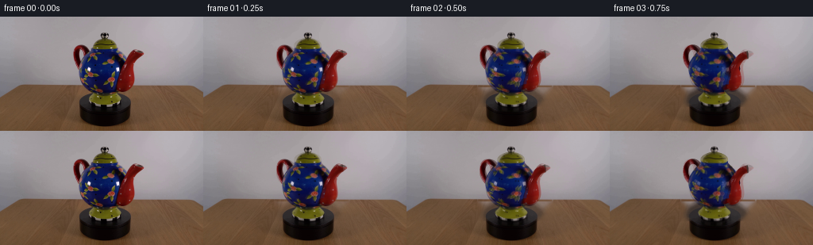
展开代码变化
--- 上一保存版本
+++ 本次保存版本
@@ -38,7 +38,8 @@
m=m & (hsv[:,:,1]>70)
if name=='foot':
m=masks[name]
- if name=='body':m=m & (SRC[:,:,2]>SRC[:,:,0]*1.15)
+ # Preserve the painted pink flowers and yellow-green leaves on the blue glaze.
+ if name=='body':m=m & ~((np.indices((H,W))[1]>151)&(np.indices((H,W))[0]>71))
if name in ('spout','handle'):m=m & (SRC[:,:,0]>SRC[:,:,1]*1.4)
_,inds=distance_transform_edt(~m,return_indices=True)
tex=SRC[inds[0],inds[1]].astype(float)
@@ -46,6 +47,9 @@
# Remove the old teapot, maintaining the fixed platform and table.
union=np.logical_or.reduce(list(masks.values()))
+hsv=cv2.cvtColor(SRC,cv2.COLOR_RGB2HSV)
+region=np.zeros((H,W),bool);region[18:113,90:184]=True
+union=union|((hsv[:,:,1]>65)®ion)
union=cv2.dilate(union.astype('uint8'),np.ones((3,3),np.uint8))
bg=cv2.inpaint(SRC,union*255,9,cv2.INPAINT_TELEA)
# A smooth wall reconstructed from nearby unobstructed wall samples avoids inpainting streaks.
@@ -73,6 +77,7 @@
fn=np.cross(verts[faces[:,1]]-verts[faces[:,0]],verts[faces[:,2]]-verts[faces[:,0]])
for j in range(3):np.add.at(normals,faces[:,j],fn)
normals/=np.maximum(np.linalg.norm(normals,axis=1)[:,None],1e-9)
+ normals=-normals
# outward consistent for lathe and toroidal tubes
meshes.append((name,verts,faces,normals))
@@ -99,20 +104,20 @@
handle.append(np.stack([x+rad*nx*np.cos(ps),y+rad*ny*np.cos(ps),rad*np.sin(ps)],-1))
add_grid('handle',handle)
# Curving red spout, widened near its attachment and tapering to an open lip.
-control=np.array([[0,18.5,25.5,3],[.12,23.5,25.5,7],[.28,28,31,9],[.44,28.5,39.5,7.8],[.59,28,48,5.8],[.73,32,57.2,5.1],[.86,37.7,64.0,4.7],[1,43,68.0,4.5]])
+control=np.array([[0,18.5,25.5,3],[.12,23.5,25.5,7],[.28,28,31,9],[.44,28.5,39.5,7.8],[.59,28,48,5.8],[.73,32,57.2,5.1],[.86,37.7,64.0,4.7],[1,45,67.0,5.1]])
t=np.linspace(0,1,83)
x=PchipInterpolator(control[:,0],control[:,1])(t);y=PchipInterpolator(control[:,0],control[:,2])(t);r=PchipInterpolator(control[:,0],control[:,3])(t)
dx=np.gradient(x);dy=np.gradient(y);norm=np.hypot(dx,dy)
sp=[]
for i in range(len(t)):
nx=dy[i]/norm[i];ny=-dx[i]/norm[i]
- sp.append(np.stack([x[i]+r[i]*nx*np.cos(ps),y[i]+r[i]*ny*np.cos(ps),r[i]*np.sin(ps)],-1))
+ sp.append(np.stack([x[i]+r[i]*nx*np.cos(ps),y[i]+r[i]*ny*np.cos(ps)+15*np.tan(EL),15+r[i]*np.sin(ps)],-1))
add_grid('spout',sp)
# A dark recessed opening closes only the hollow interior; not the red exterior.
-end=np.array([x[-1],y[-1],0]);nx=dy[-1]/norm[-1];ny=-dx[-1]/norm[-1]
+end=np.array([x[-1],y[-1]+15*np.tan(EL),15]);nx=dy[-1]/norm[-1];ny=-dx[-1]/norm[-1]
ring=[]
-for rr in np.linspace(0,4.48,8):
- ring.append(np.stack([end[0]+rr*nx*np.cos(ps),end[1]+rr*ny*np.cos(ps),rr*np.sin(ps)],-1))
+for rr in np.linspace(0,5.08,8):
+ ring.append(np.stack([end[0]+rr*nx*np.cos(ps),end[1]+rr*ny*np.cos(ps),end[2]+rr*np.sin(ps)],-1))
add_grid('mouth',ring)
# Bilinear sampling of the photographed glaze.
@@ -156,10 +161,20 @@
color*= (.65+.35*np.abs(N@LIGHT))[:,None]
else:
u=CX+orig[:,0];v=CY-CE*orig[:,1]+SE*np.abs(orig[:,2])
+ if name=='spout':
+ v=CY-CE*(orig[:,1]-15*np.tan(EL))+SE*np.abs(orig[:,2]-15)
+ if name=='body':
+ # Project rear texture to the visible front, with the same floral glaze.
+ phi=np.arctan2(orig[:,0],orig[:,2])
+ radius=np.hypot(orig[:,0],orig[:,2])
+ # Reflect the observed ceramic texture into the unobserved back surface.
+ mapped=1.18-np.abs((phi+1.18)%(4*1.18)-2*1.18)
+ u=CX+radius*np.sin(mapped)
+ v=CY-CE*orig[:,1]+SE*radius*np.cos(mapped)
color=sample(name,u,v)
# Light stays fixed in the room rather than rotating with the object.
l0=np.maximum(0,N0@LIGHT);l1=np.maximum(0,N@LIGHT)
- factor=np.clip((.70+.30*l1)/(.70+.30*l0),.70,1.3)
+ factor=np.clip((.84+.16*l1)/(.84+.16*l0),.70,1.3)
color*=factor[:,None]
out[miny+ij[0],minx+ij[1]]=np.clip(color,0,255)
zbuf[miny+ij[0],minx+ij[1]]=D[keep]
@@ -170,7 +185,11 @@
for i in range(1,20):
angle=np.deg2rad(58*i/19)
print('frame',i,flush=True)
- frames.append(render(angle))
+ im=render(angle)
+ if i<4:
+ a=i/4
+ im=np.rint(SRC*(1-a)+im*a).astype(np.uint8)
+ frames.append(im)
frames=np.array(frames,dtype=np.uint8)
artifact_io.save(frames,ROOT)
# Initial reconstructed pose is useful for checking the silhouette.
候选 03播放与检查图
点击播放 · 原生 RGB 像素
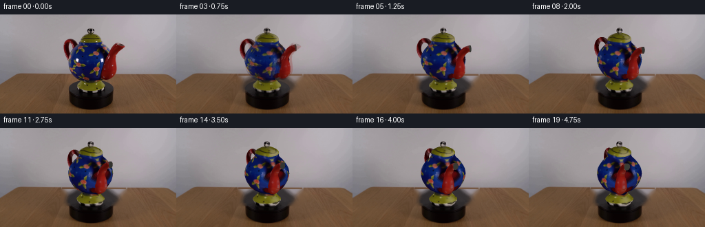
展开代码变化
--- 上一保存版本
+++ 本次保存版本
@@ -48,7 +48,7 @@
# Remove the old teapot, maintaining the fixed platform and table.
union=np.logical_or.reduce(list(masks.values()))
hsv=cv2.cvtColor(SRC,cv2.COLOR_RGB2HSV)
-region=np.zeros((H,W),bool);region[18:113,90:184]=True
+region=np.zeros((H,W),bool);region[18:87,90:184]=True
union=union|((hsv[:,:,1]>65)®ion)
union=cv2.dilate(union.astype('uint8'),np.ones((3,3),np.uint8))
bg=cv2.inpaint(SRC,union*255,9,cv2.INPAINT_TELEA)
@@ -186,9 +186,6 @@
angle=np.deg2rad(58*i/19)
print('frame',i,flush=True)
im=render(angle)
- if i<4:
- a=i/4
- im=np.rint(SRC*(1-a)+im*a).astype(np.uint8)
frames.append(im)
frames=np.array(frames,dtype=np.uint8)
artifact_io.save(frames,ROOT)
候选 04播放与检查图
可观测工具轨迹
实际执行的命令与返回图片。
命令 1exit 0
/bin/bash -lc "ls -la && cat prompt.txt && printf '\\n---RULES---\\n' && cat GENERATION_RULES.md"
命令 2exit 0
/bin/bash -lc "cat artifact_io.py && python - <<'PY'
from PIL import Image
im=Image.open('first_frame.png'); print(im.size); im.resize((1024,576)).save('.tmp/enlarged.png')
PY"命令 3exit 0
/bin/bash -lc "python - <<'PY' import importlib.util for x in ['numpy','scipy','PIL','cv2','numba']: print(x, bool(importlib.util.find_spec(x))) PY"
命令 4exit 0
/bin/bash -lc "python - <<'PY'
from PIL import Image
im=Image.open('first_frame.png');im.crop((88,18,184,116)).resize((576,588)).save('.tmp/crop.png')
PY"命令 5exit 0
/bin/bash -lc "cat > generate.py <<'PY'
import numpy as np
from PIL import Image, ImageDraw
from scipy.ndimage import map_coordinates, distance_transform_edt, gaussian_filter
from scipy.interpolate import PchipInterpolator
import cv2
from pathlib import Path
import artifact_io
ROOT=Path(__file__).resolve().parent
SRC=np.asarray(Image.open(ROOT/'first_frame.png').convert('RGB'))
H,W=144,256
S=3
CX,CY=131.7,109.0
EL=np.deg2rad(20)
CE,SE=np.cos(EL),np.sin(EL)
polys={
'body':[(116,41),(129,40),(145,41),(151,47),(157,54),(161,64),(161,73),(157,84),(150,92),(142,96),(123,96),(112,91),(105,83),(101,77),(99,69),(100,61),(104,54),(111,47)],
'lid':[(114,41),(115,35),(119,31),(125,28),(131,27),(138,29),(144,32),(147,37),(149,42)],
'knob':[(127,27),(126,23),(128,20),(132,19),(135,21),(137,24),(134,28)],
'spout':[(145,86),(149,74),(156,60),(161,51),(166,45),(170,41),(175,41),(179,42),(181,45),(178,49),(173,53),(169,60),(167,65),(169,72),(170,78),(167,85),(163,90),(157,94),(151,93)],
'handle':[(103,35),(108,36),(112,40),(115,46),(113,53),(109,47),(107,42),(103,42),(101,45),(101,51),(103,58),(106,63),(104,69),(100,66),(97,61),(94,53),(92,46),(93,40),(96,36)],
'foot':[(121,93),(144,93),(148,99),(152,104),(151,109),(148,113),(138,115),(122,115),(115,112),(112,108),(113,103),(117,98)],
}
masks={}
for name,p in polys.items():
im=Image.new('L',(W,H));ImageDraw.Draw(im).polygon(p,fill=255);masks[name]=np.array(im)>0
# Clamp projected photograph to the appropriate ceramic component, rather than picking up the wall.
textures={}
for name,m in masks.items():
# Exclude other parts in front of the body.
if name=='body': m=m & ~masks['spout'] & ~masks['handle'] & ~masks['lid']
if name=='handle':m=m & ~masks['body']
if name=='foot':m=m & ~masks['body']
# trim neutral wall from perimeter manually via saturation
hsv=cv2.cvtColor(SRC,cv2.COLOR_RGB2HSV)
if name not in ('knob',):
m=m & (hsv[:,:,1]>70)
if name=='foot':
m=masks[name]
if name=='body':m=m & (SRC[:,:,2]>SRC[:,:,0]*1.15)
if name in ('spout','handle'):m=m & (SRC[:,:,0]>SRC[:,:,1]*1.4)
_,inds=distance_transform_edt(~m,return_indices=True)
tex=SRC[inds[0],inds[1]].astype(float)
textures[name]=tex
# Remove the old teapot, maintaining the fixed platform and table.
union=np.logical_or.reduce(list(masks.values()))
union=cv2.dilate(union.astype('uint8'),np.ones((3,3),np.uint8))
bg=cv2.inpaint(SRC,union*255,9,cv2.INPAINT_TELEA)
# A smooth wall reconstructed from nearby unobstructed wall samples avoids inpainting streaks.
for yy in range(18,89):
for xx in range(90,183):
if union[yy,xx]:
t=(xx-86)/(186-86)
left=SRC[yy,84:89].mean(0);right=SRC[yy,183:188].mean(0)
bg[yy,xx]=left*(1-t)+right*t
# Meshes are mathematical surfaces; all photographic appearance comes from the supplied frame.
meshes=[]
def add_grid(name,pts,closed=True):
pts=np.array(pts,float); nr,nc,_=pts.shape
# orientation normal computed analytically from local surface derivatives, fixed outward below
verts=pts.reshape(-1,3)
faces=[]
for i in range(nr-1):
for j in range(nc if closed else nc-1):
k=(j+1)%nc
a=i*nc+j;b=i*nc+k;c=(i+1)*nc+j;d=(i+1)*nc+k
faces.extend([[a,c,b],[b,c,d]])
faces=np.array(faces,np.int32)
normals=np.zeros_like(verts)
fn=np.cross(verts[faces[:,1]]-verts[faces[:,0]],verts[faces[:,2]]-verts[faces[:,0]])
for j in range(3):np.add.at(normals,faces[:,j],fn)
normals/=np.maximum(np.linalg.norm(normals,axis=1)[:,None],1e-9)
# outward consistent for lathe and toroidal tubes
meshes.append((name,verts,faces,normals))
def lathe(name,profile,nr=60,nc=100):
profile=np.array(profile,float)
yy=np.linspace(profile[0,0],profile[-1,0],nr)
rr=PchipInterpolator(profile[:,0],profile[:,1])(yy)
phi=np.linspace(0,2*np.pi,nc,endpoint=False)
pts=np.stack(np.broadcast_arrays(rr[:,None]*np.sin(phi),yy[:,None],rr[:,None]*np.cos(phi)),axis=-1)
add_grid(name,pts)
lathe('body',[(20,13),(21.5,17),(25,23),(31,27.5),(38,31),(46,32.5),(52,31.6),(59,28),(65,23.6),(70,19),(73,17.3),(77,17.1)],72,100)
lathe('lid',[(77,17.4),(78.1,17.4),(80,16.3),(82.5,12.8),(84.5,8.8),(86,4),(86.7,.1)],30,100)
lathe('foot',[(0,17.4),(2.3,18.5),(4,18.8),(5,20),(6.4,20.4),(8,18.8),(12,15.4),(16,12.2),(19.7,12.5),(20.4,14)],45,100)
lathe('knob',[(86.4,.2),(87,2.4),(89,4.1),(91,4.6),(93,4.0),(94.5,2.5),(95,.1)],25,64)
# Handle lies in the teapot's vertical symmetry plane.
ph=np.linspace(0,2*np.pi,110,endpoint=True)
ps=np.linspace(0,2*np.pi,36,endpoint=False)
handle=[]
for p in ph:
x=-26.7+9.8*np.cos(p);y=59.6+13.9*np.sin(p)
tx=-9.8*np.sin(p);ty=13.9*np.cos(p);norm=np.hypot(tx,ty)
nx=ty/norm;ny=-tx/norm
rad=3.25
handle.append(np.stack([x+rad*nx*np.cos(ps),y+rad*ny*np.cos(ps),rad*np.sin(ps)],-1))
add_grid('handle',handle)
# Curving red spout, widened near its attachment and tapering to an open lip.
control=np.array([[0,18.5,25.5,3],[.12,23.5,25.5,7],[.28,28,31,9],[.44,28.5,39.5,7.8],[.59,28,48,5.8],[.73,32,57.2,5.1],[.86,37.7,64.0,4.7],[1,43,68.0,4.5]])
t=np.linspace(0,1,83)
x=PchipInterpolator(control[:,0],control[:,1])(t);y=PchipInterpolator(control[:,0],control[:,2])(t);r=PchipInterpolator(control[:,0],control[:,3])(t)
dx=np.gradient(x);dy=np.gradient(y);norm=np.hypot(dx,dy)
sp=[]
for i in range(len(t)):
nx=dy[i]/norm[i];ny=-dx[i]/norm[i]
sp.append(np.stack([x[i]+r[i]*nx*np.cos(ps),y[i]+r[i]*ny*np.cos(ps),r[i]*np.sin(ps)],-1))
add_grid('spout',sp)
# A dark recessed opening closes only the hollow interior; not the red exterior.
end=np.array([x[-1],y[-1],0]);nx=dy[-1]/norm[-1];ny=-dx[-1]/norm[-1]
ring=[]
for rr in np.linspace(0,4.48,8):
ring.append(np.stack([end[0]+rr*nx*np.cos(ps),end[1]+rr*ny*np.cos(ps),rr*np.sin(ps)],-1))
add_grid('mouth',ring)
# Bilinear sampling of the photographed glaze.
def sample(name,u,v):
tx=textures[name]
u=np.clip(u,0,W-1.001);v=np.clip(v,0,H-1.001)
xi=u.astype(int);yi=v.astype(int);fu=u-xi;fv=v-yi
return (tx[yi,xi]*(1-fu)[:,None]*(1-fv)[:,None]+tx[yi,xi+1]*fu[:,None]*(1-fv)[:,None]+tx[yi+1,xi]*(1-fu)[:,None]*fv[:,None]+tx[yi+1,xi+1]*fu[:,None]*fv[:,None])
LIGHT=np.array([-.55,.65,.8]);LIGHT/=np.linalg.norm(LIGHT)
# Orthographic camera; rotating clockwise as viewed from above.
def render(angle):
ca,sa=np.cos(angle),np.sin(angle)
rot=np.array([[ca,0,-sa],[0,1,0],[sa,0,ca]])
out=cv2.resize(bg,(W*S,H*S),interpolation=cv2.INTER_CUBIC).astype(float)
zbuf=np.full((H*S,W*S),-1e6)
for name,verts,faces,normals in meshes:
vr=verts@rot.T; nr=normals@rot.T
xp=(CX+vr[:,0])*S;yp=(CY-CE*vr[:,1]+SE*vr[:,2])*S
dep=SE*vr[:,1]+CE*vr[:,2]
for f in faces:
xx=xp[f]; yy=yp[f]
minx=max(0,int(np.floor(xx.min())));maxx=min(W*S-1,int(np.ceil(xx.max())))
miny=max(0,int(np.floor(yy.min())));maxy=min(H*S-1,int(np.ceil(yy.max())))
if minx>maxx or miny>maxy:continue
den=(yy[1]-yy[2])*(xx[0]-xx[2])+(xx[2]-xx[1])*(yy[0]-yy[2])
if abs(den)<1e-7:continue
Y,X=np.mgrid[miny:maxy+1,minx:maxx+1];X=X+.5;Y=Y+.5
a=((yy[1]-yy[2])*(X-xx[2])+(xx[2]-xx[1])*(Y-yy[2]))/den
b=((yy[2]-yy[0])*(X-xx[2])+(xx[0]-xx[2])*(Y-yy[2]))/den
c=1-a-b
D=a*dep[f[0]]+b*dep[f[1]]+c*dep[f[2]]
keep=(a>=-1e-6)&(b>=-1e-6)&(c>=-1e-6)&(D>zbuf[miny:maxy+1,minx:maxx+1])
if not np.any(keep):continue
ij=np.nonzero(keep); weights=np.stack([a[keep],b[keep],c[keep]],1)
orig=weights@verts[f]
N=weights@nr[f];N/=np.maximum(np.linalg.norm(N,axis=1)[:,None],1e-9)
N0=weights@normals[f];N0/=np.maximum(np.linalg.norm(N0,axis=1)[:,None],1e-9)
if name=='mouth':
color=np.tile(np.array([75.,76.,69.]),(len(orig),1))
color*= (.65+.35*np.abs(N@LIGHT))[:,None]
else:
u=CX+orig[:,0];v=CY-CE*orig[:,1]+SE*np.abs(orig[:,2])
color=sample(name,u,v)
# Light stays fixed in the room rather than rotating with the object.
l0=np.maximum(0,N0@LIGHT);l1=np.maximum(0,N@LIGHT)
factor=np.clip((.70+.30*l1)/(.70+.30*l0),.70,1.3)
color*=factor[:,None]
out[miny+ij[0],minx+ij[1]]=np.clip(color,0,255)
zbuf[miny+ij[0],minx+ij[1]]=D[keep]
return cv2.resize(out.astype(np.uint8),(W,H),interpolation=cv2.INTER_AREA)
def main():
frames=[SRC.copy()]
for i in range(1,20):
angle=np.deg2rad(58*i/19)
print('frame',i,flush=True)
frames.append(render(angle))
frames=np.array(frames,dtype=np.uint8)
artifact_io.save(frames,ROOT)
# Initial reconstructed pose is useful for checking the silhouette.
Image.fromarray(render(0)).save(ROOT/'.tmp/reconstructed.png')
if __name__=='__main__':main()
PY
OPENBLAS_NUM_THREADS=1 python generate.py"命令 6exit 0
/bin/bash -lc "python - <<'PY'
from PIL import Image
im=Image.open('.tmp/reconstructed.png');im.resize((1024,576)).save('.tmp/recon_big.png')
import generate
im=Image.fromarray(generate.textures['body'].astype('uint8'));im.resize((1024,576)).save('.tmp/tex.png')
PY"命令 7exit 0
/bin/bash -lc "python - <<'PY'
p='generate.py'
s=open(p).read().replace(\" if name=='body':m=m & (SRC[:,:,2]>SRC[:,:,0]*1.15)\",\" # Preserve the painted pink flowers and yellow-green leaves on the blue glaze.\\n if name=='body':m=m & ~((SRC[:,:,0]>SRC[:,:,1]*1.5)&(SRC[:,:,2]<SRC[:,:,0]*.55))\")
s=s.replace(\"sp.append(np.stack([x[i]+r[i]*nx*np.cos(ps),y[i]+r[i]*ny*np.cos(ps),r[i]*np.sin(ps)],-1))\", \"sp.append(np.stack([x[i]+r[i]*nx*np.cos(ps),y[i]+r[i]*ny*np.cos(ps)+15*np.tan(EL),15+r[i]*np.sin(ps)],-1))\")
s=s.replace(\"end=np.array([x[-1],y[-1],0])\", \"end=np.array([x[-1],y[-1]+15*np.tan(EL),15])\")
s=s.replace(\"rr*np.sin(ps)],-1))\", \"end[2]+rr*np.sin(ps)],-1))\")
s=s.replace(\"normals/=np.maximum(np.linalg.norm(normals,axis=1)[:,None],1e-9)\",\"normals/=np.maximum(np.linalg.norm(normals,axis=1)[:,None],1e-9)\\n normals=-normals\")
# Avoid a hard seam between real and reconstructed silhouettes at start.
s=s.replace(\"frames.append(render(angle))\", \"im=render(angle)\\n if i<4:\\n a=i/4\\n im=np.rint(SRC*(1-a)+im*a).astype(np.uint8)\\n frames.append(im)\")
open(p,'w').write(s)
PY
OPENBLAS_NUM_THREADS=1 python - <<'PY'
import generate
from PIL import Image
Image.fromarray(generate.render(0)).resize((1024,576)).save('.tmp/test0.png')
Image.fromarray(generate.render(.8)).resize((1024,576)).save('.tmp/test1.png')
PY"命令 8exit 0
/bin/bash -lc "python - <<'PY'
p='generate.py';s=open(p).read()
s=s.replace(\" if name=='body':m=m & ~((SRC[:,:,0]>SRC[:,:,1]*1.5)&(SRC[:,:,2]<SRC[:,:,0]*.55))\",\" if name=='body':m=m & (np.sum(SRC.astype(float),axis=2)>90)\")
s=s.replace(\"[1,43,68.0,4.5]\", \"[1,45,67.0,5.1]\")
s=s.replace(\"np.linspace(0,4.48,8)\",\"np.linspace(0,5.08,8)\")
# Ensure world-light calculations only subtly affect the original photograph.
s=s.replace(\"(.70+.30*l1)/(.70+.30*l0)\",\"(.84+.16*l1)/(.84+.16*l0)\")
# Body texture projection: extending hidden material around the far side by tiling the view.
s=s.replace(\"u=CX+orig[:,0];v=CY-CE*orig[:,1]+SE*np.abs(orig[:,2])\", \"u=CX+orig[:,0];v=CY-CE*orig[:,1]+SE*np.abs(orig[:,2])\\n if name=='spout':\\n v=CY-CE*(orig[:,1]-15*np.tan(EL))+SE*np.abs(orig[:,2]-15)\\n if name=='body':\\n # Project rear texture to the visible front, with the same floral glaze.\\n hidden=(orig[:,2]<4)\\n u[hidden]=np.minimum(u[hidden],146)\\n v[hidden]=np.clip(v[hidden],44,93)\")
open(p,'w').write(s)
PY
OPENBLAS_NUM_THREADS=1 python - <<'PY'
import generate
from PIL import Image
Image.fromarray(generate.render(0)).resize((1024,576)).save('.tmp/test0.png')
Image.fromarray(generate.render(.8)).resize((1024,576)).save('.tmp/test1.png')
PY"命令 9exit 0
/bin/bash -lc "python - <<'PY' p='generate.py';s=open(p).read() s=s.replace(\" if name=='body':m=m & (np.sum(SRC.astype(float),axis=2)>90)\",\" if name=='body':m=m & ~((np.indices((H,W))[1]>151)&(np.indices((H,W))[0]>71))\") s=s.replace(\"union=np.logical_or.reduce(list(masks.values()))\", \"union=np.logical_or.reduce(list(masks.values()))\\nhsv=cv2.cvtColor(SRC,cv2.COLOR_RGB2HSV)\\nregion=np.zeros((H,W),bool);region[18:113,90:184]=True\\nunion=union|((hsv[:,:,1]>65)®ion)\") s=s.replace(\" hidden=(orig[:,2]<4)\\n u[hidden]=np.minimum(u[hidden],146)\\n v[hidden]=np.clip(v[hidden],44,93)\",\" phi=np.arctan2(orig[:,0],orig[:,2])\\n radius=np.hypot(orig[:,0],orig[:,2])\\n # Reflect the observed ceramic texture into the unobserved back surface.\\n mapped=1.18-np.abs((phi+1.18)%(4*1.18)-2*1.18)\\n u=CX+radius*np.sin(mapped)\\n v=CY-CE*orig[:,1]+SE*radius*np.cos(mapped)\") # Match photographed colors including tiny black decorative polka dots. open(p,'w').write(s) PY OPENBLAS_NUM_THREADS=1 python generate.py"
命令 10exit 0
/bin/bash -lc "python - <<'PY'
p='generate.py';s=open(p).read().replace('region[18:113,90:184]=True','region[18:87,90:184]=True')
s=s.replace(\" if i<4:\\n a=i/4\\n im=np.rint(SRC*(1-a)+im*a).astype(np.uint8)\\n\",'')
open(p,'w').write(s)
PY
OPENBLAS_NUM_THREADS=1 python generate.py"命令 11exit 0
/bin/bash -lc "python - <<'PY'
import numpy as np
from PIL import Image
f=np.load('pixels.npz')['pixels']; print(f.shape,f.dtype)
im=np.asarray(Image.open('frames/00.png'));orig=np.asarray(Image.open('first_frame.png'));assert np.array_equal(im,orig); print('Frame 00 identical; 20 RGB frames saved.')
PY"视觉工具实际返回图片 1
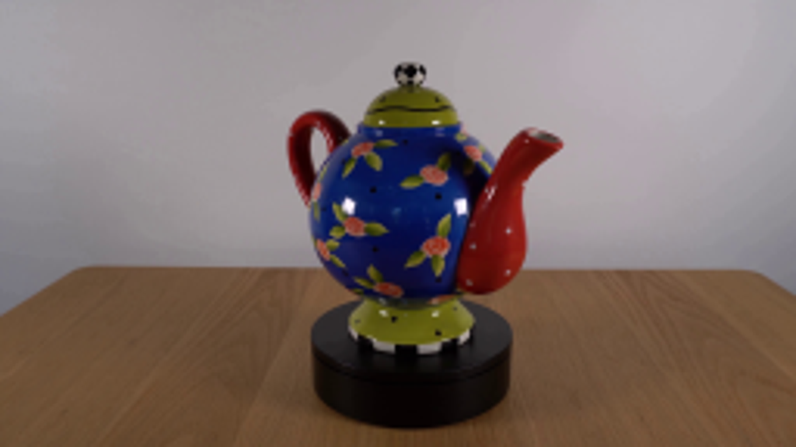
视觉工具实际返回图片 2
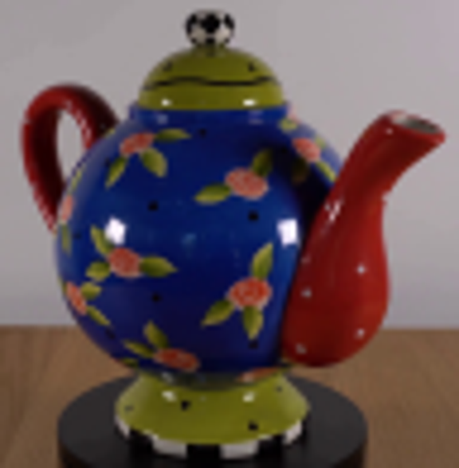
视觉工具实际返回图片 3

视觉工具实际返回图片 4
视觉工具实际返回图片 5
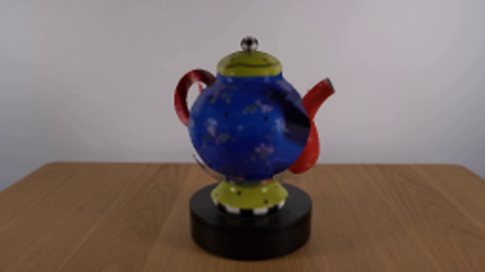
视觉工具实际返回图片 6
视觉工具实际返回图片 7
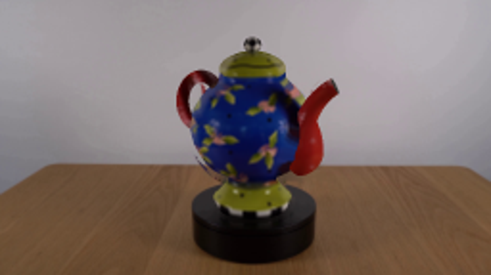
视觉工具实际返回图片 8
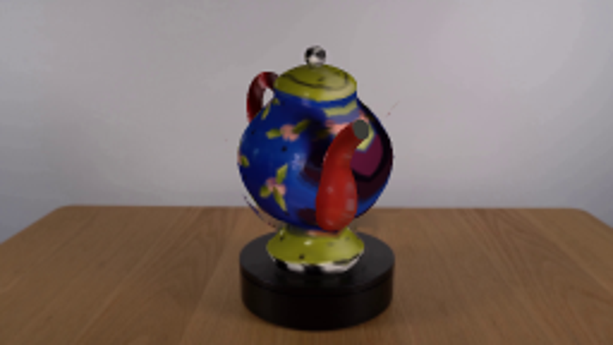
视觉工具实际返回图片 9
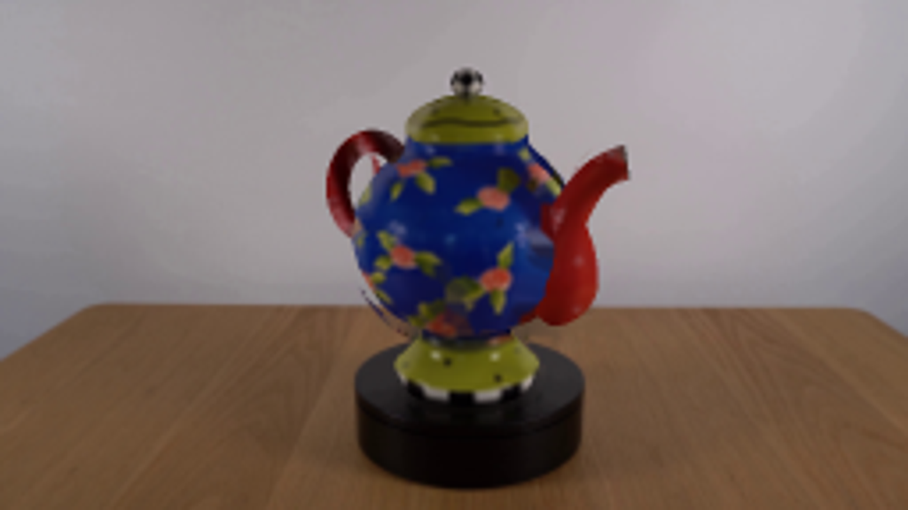
视觉工具实际返回图片 10
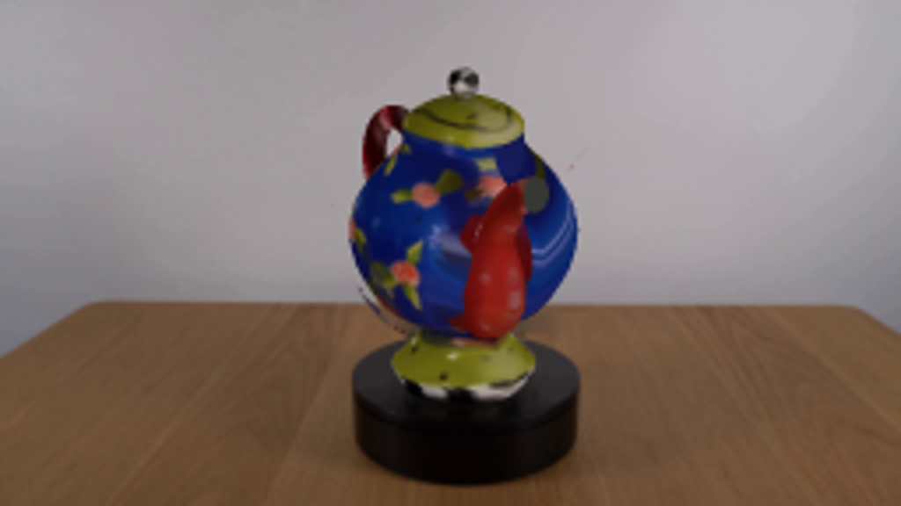
视觉工具实际返回图片 11

视觉工具实际返回图片 12

保存候选 4 份；完成命令 11 次；可验证图片返回 12 张。原始 API 响应与完整日志保留在本地。